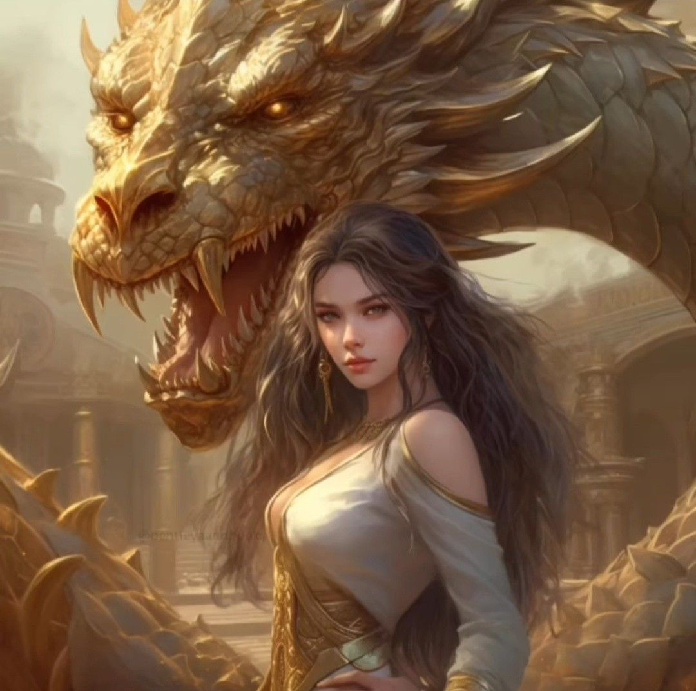
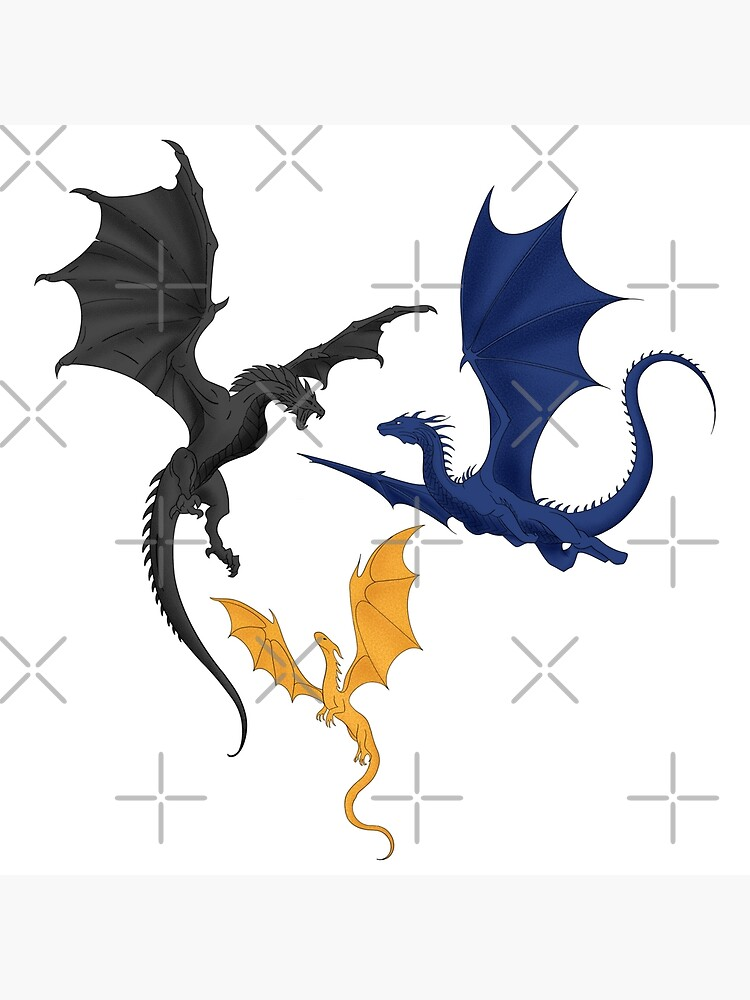
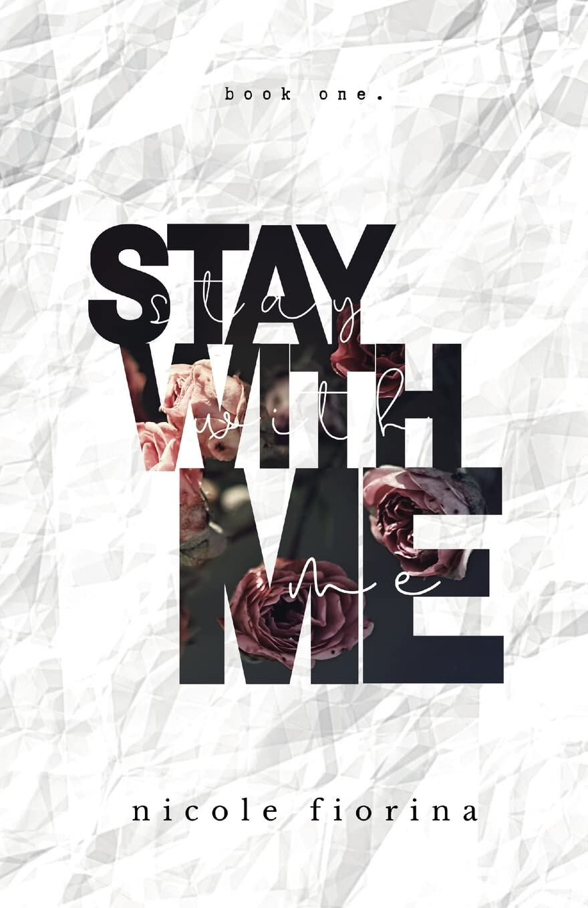
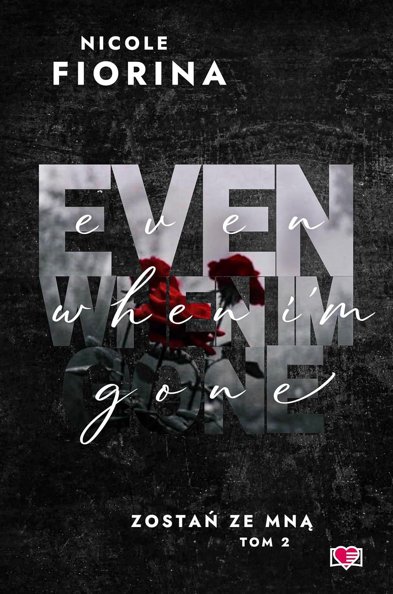
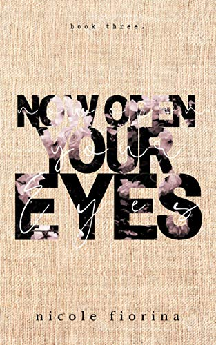
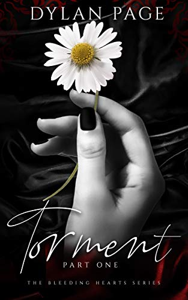
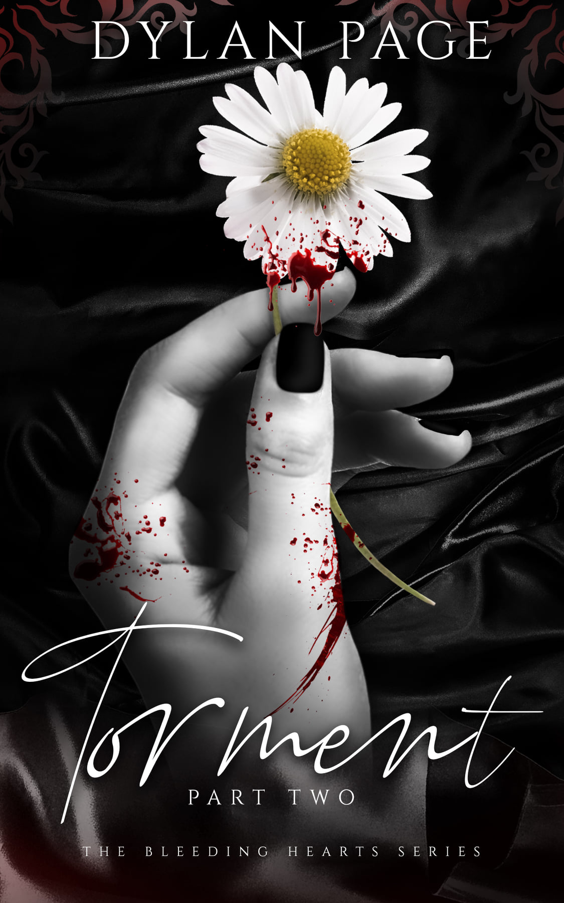

The series follows Violet Sorrengail, a brilliant but physically fragile young woman
forced into the deadliest military training program in her kingdom: the Rider Quadrant at Basgiath War College.
What begins as a fight for survival becomes a sweeping story about power, rebellion, truth,
and the bonds (human and dragon) that reshape the world.
Some of her most loved characters are, but not limited to...



This series is a dark, poetic, deeply character‑driven romance that follows Mia Knight and Ollie Masters,
two broken souls who collide in a way that’s both destructive and healing. The books blend trauma,
mental health struggles, obsession, found family, and the kind of love that feels fated but dangerous.
Each chapter of all three books starts with a poem written by Ollies character, they are some of the
most beautiful poems I've ever read so I'm going to share a few with you...
Take a guess as to which one of these poems I ended up getting tattooed on me!


The duet follows Mina, a young woman trapped in the violent world of the Celtic Beasts motorcycle club,
and Shay, her stepbrother and lifelong protector whose love twists into obsession.
Their relationship becomes a psychological battleground of dependence, control, trauma, and forbidden attachment.
Ready to head back home now? Just click the little link and it will take you there!